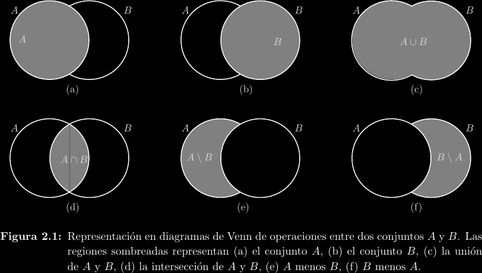
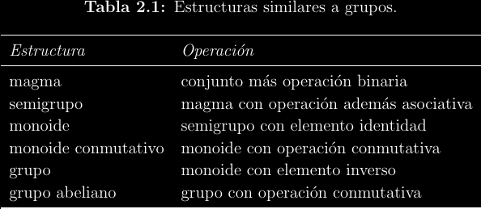
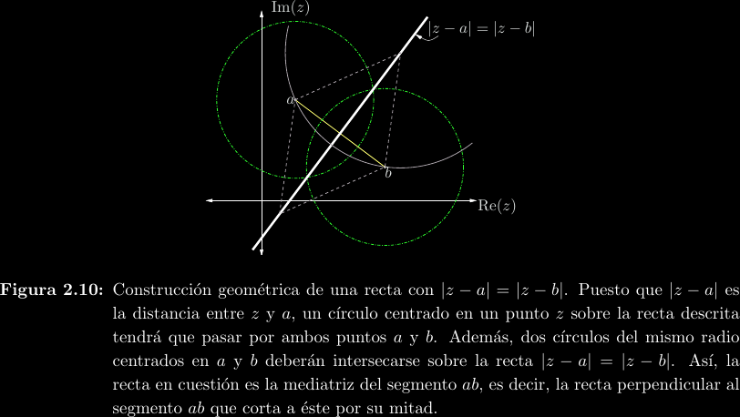
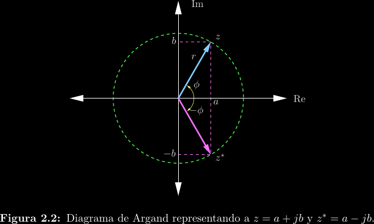

Conjuntos, estructuras y el plano complejo
Se necesitan algunos conceptos previos:
-
Conjunto: Difícil de definir formalmente sin crear paradojas, vamos a usar la noción intuitiva. 
-
Estructura algebraica: Un conjunto asociado a una operación sobre elementos de ese conjunto. Por ejemplo, los reales \(\mathbb{R}\) junto a la operación de negación \(-x\) conforman una estructura de operación unaria.
-
Nos interesan las estructuras algebraicas con operaciones binarias.


El conjunto \(\mathbb{C}\)
Se define a través la unidad imaginaria \(j\) que cumple \(j^2 = -1\). \[z = a + jb = re^{j(\theta + 2k\pi)} = r\cos(\theta) + jr\sin(\theta); k \in \mathbb{Z}\]
Podemos definir muchos constructos en el plano utilizando ecuaciones e inecuaciones en términos de la variable \(z = x + jy\).
-
Puntos: Decimos \(z_0 = 1 - j2\) para referirnos al punto cartesiano \((1, -2)\). A los ejes les llamamos eje real y eje imaginario.
-
Distancias y corrimientos: La distancia entre dos puntos \(a\) y \(b\) es \(|a - b|\).
-
Rectas paralelas a los ejes: En los reales esto corresponde a las ecuaciones \(x = c\) y \(y = c\), por lo que en los complejos decimos \(\mathrm{Re}\{z\} = c\) e \(\mathrm{Im}\{z\} = c\).
-
Semirrectas: Como los números complejos pueden expresarse en forma de magnitud y ángulo, podemos construir "rayos" que provienen del origen con ecuaciones como \(\angle z = \theta\).
-
Rectas: Todos los puntos de una recta cumplen estar a la misma distancia de tanto un punto \(a\) como un punto \(b\), por lo que es posible escribir una recta como \(|z - a| = |z - b|\).

- Círculos: Sabemos que \(|z|^2 = x^2 + y^2 = r^2\), por lo que una circunferencia centrada en el origen está expresada por \(|z| = r\). Si "desfasamos" \(z\) es posible mover el origen. Por ejemplo, \(|z - (3 + j5)| \lt 2\) es el interior de un círculo centrado en \(z_0 = 3 + j5\) y con un radio de \(2\).

Conjugación
Si \(z = a + jb = re^{j\theta}\), su conjugado es \(z^* = a - jb = re^{-j\theta}\). En otras palabras, invierte el signo del ángulo, lo cual crea un "espejo" alrededor del eje real.

La conjugación tiene dos propiedades de cancelación: \[z + z^* = 2\mathrm{Re}\{z\}\] \[z - z^* = j2\mathrm{Im}\{z\}\]
Multiplicación y división
Para multiplicar en forma rectangular, tenemos que: \[(a + jb)(c + jd) = (ac - bd) + j(ad + jbc)\] Pero es más fácil si lo hacemos en forma polar, ya que: \[r_1e^{j\theta_1}\cdot r_2e^{j\theta_2} = r_1r_2e^{j(\theta_1 + \theta_2)}\] Para dividir en forma rectangular es necesario utilizar el conjugado: \[\frac{a + jb}{c + jd} = \frac{a + jb}{c + jd}\cdot\frac{c - jd}{c - jd} = \frac{(a + jb)(c - jd)}{c^2 + d^2} = \frac{z_1z_2^*}{|z_2|^2}\] Esto nos muestra da una importante propiedad del conjugado: \[zz^* = |z|^2\] Dividir también es más fácil en forma polar: \[\frac{r_1e^{j\theta_1}}{r_2e^{j\theta_2}} = \frac{r_1}{r_2}e^{j(\theta_1 - \theta_2)}\]
Raíces complejas
Sea \(z = re^{j(\theta + 2k\pi)}\), entonces \(w = \sqrt[n]{r}e^{\frac{j}{n}(\theta + 2k\pi)}\) es una raíz enésima de \(z\). La redundancia polar se vuelve importante aquí, ya que \(k\) evaluado desde \(0\) hasta \(n - 1\) produce \(n\) distintas raíces, acomodadas geométricamente por un cambio constante de rotación. Todos los complejos distintos de cero (incluyendo a los reales, que también son complejos) tienen exactamente \(n\) raíces enésimas distintas.

Potencias y logaritmos
El logaritmo complejo se puede deducir fácilmente a partir de la forma polar: \[\ln\left(re^{j(\theta + 2k\pi)}\right) = \ln(r) + \ln\left(e^{j(\theta + 2k\pi)}\right) = \ln(r) + j(\theta + 2k\pi)\] Así que en los complejos existen muchos logaritmos para un mismo número, no solo uno. Típicamente se habla del logaritmo principal (se identifica por la mayúscula), \[\mathrm{Ln}(z) = \ln_{k = 0}(z)\] Debido a argumentos parecidos tenemos que \[z^w = e^{\ln{z^w}} = e^{w\ln{z}}\] Por lo que la exponenciación también tiene una rama principal e infinitas adicionales por redundancia polar.
Funciones circulares
Recordando la fórmula de Euler, \(e^{j\theta} = \cos(\theta) + j\sin(\theta)\), podemos extender las funciones seno y coseno a argumentos complejos: \[\cos(z) = \frac{e^{jz} + e^{-jz}}{2}\] \[\sin(z) = \frac{e^{jz} - e^{-jz}}{j2}\] En este mismo estilo, podemos definir nuevas funciones análogas, llamadas funciones hiperbólicas, como las partes par e impar de la función exponencial: \[\cosh(z) = \frac{e^{z} + e^{-z}}{2} = \cos(jz)\] \[\sinh(z) = \frac{e^{z} - e^{-z}}{2} = -j\sin(jz)\]